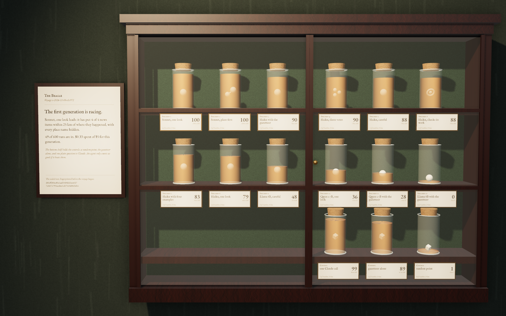
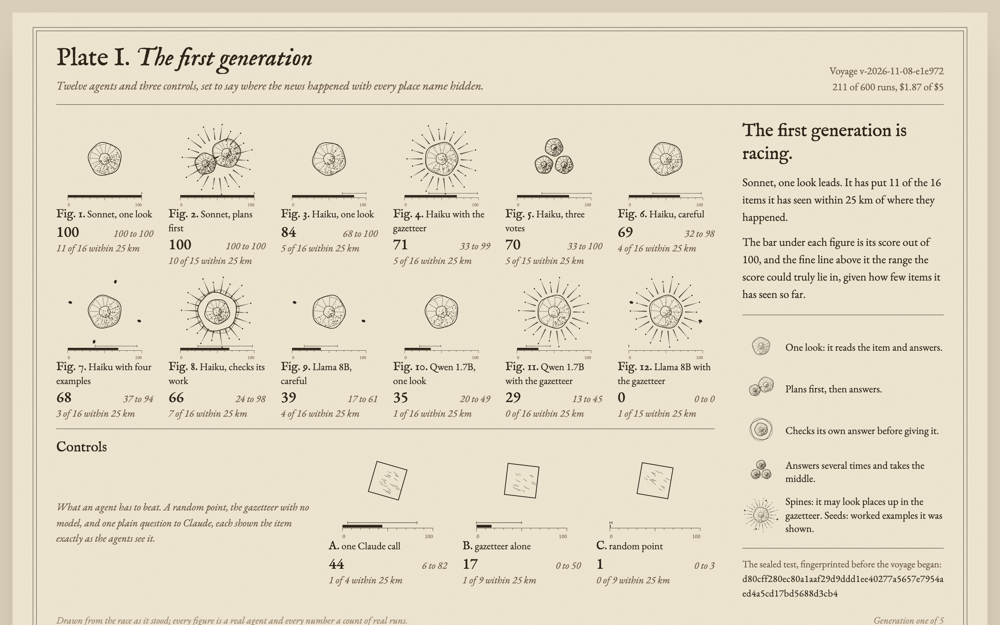
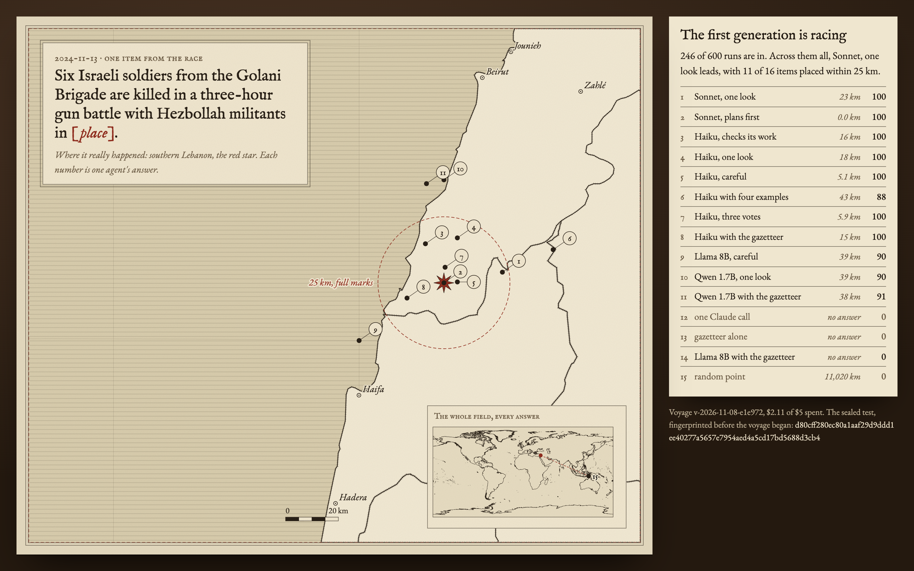

Beagle: three directions
All three are drawn from the same real race: generation one of a voyage on the hidden-places arena. Open each to see it live; pick one, or say which parts to combine.
A. The specimen cabinet
Each agent is a jar on a shelf in a glazed mahogany cabinet. The amber spirit rises with its score; what floats inside shows how it works. The controls sit on the bottom shelf. Photoreal, in three.js, like Bombechat's machine.

B. The plate
A natural-history plate: each agent drawn as an engraved organism whose anatomy is its design, with a scale bar for its score and the range it could truly lie in. Flat, printed, and the quickest to read across all fifteen.

C. The chart table
One real news item, places hidden, with every agent's answer plotted on an engraved chart against where it really happened, plus the whole field on a world inset and the table of distances. The strongest at showing the work is real.
